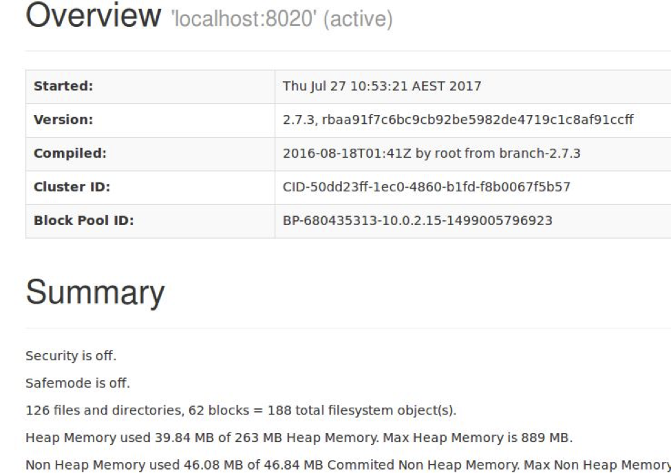
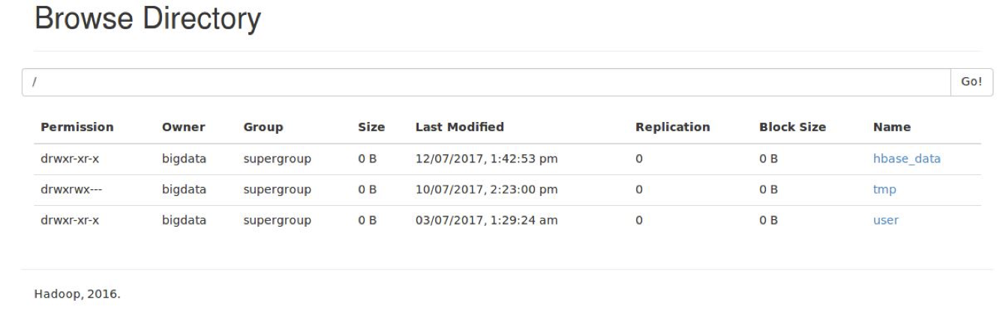
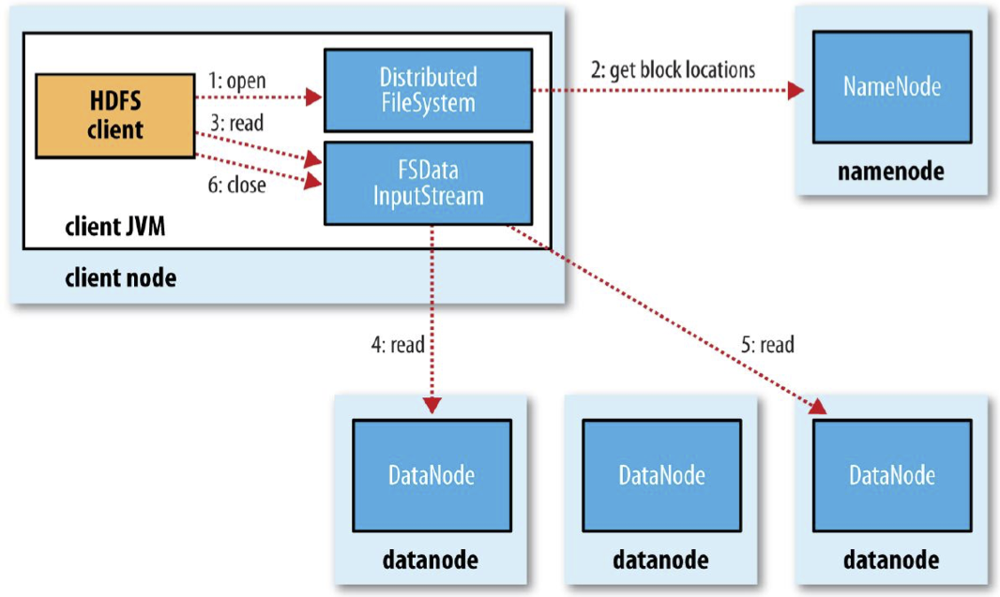
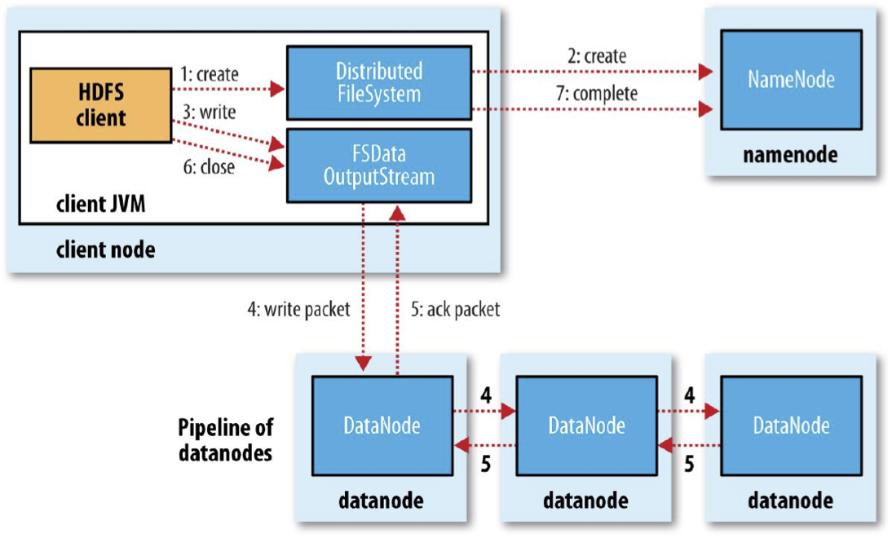

$ cd $HADOOP_HOME
$ ./sbin/start-all.sh
$ jps 28530 SecondaryNameNode 11188 NodeManager 28133 NameNode 28311 DataNode 10845 ResourceManager 3542 Jps
$ bin/hdfs dfs -mkdir -p /user/bigdata
$ hdfs dfs -mkdir input
$ hdfs dfs -ls Found 1 item drwxr-xr-x - bigdata supergroup 0 2017-07-17 16:33 input
$ hdfs dfs -ls /user/bigdata Found 1 item drwxr-xr-x - bigdata supergroup 0 2017-07-17 16:33 /user/bigdata/input
$ hdfs dfs -put README.txt input
$ hdfs dfs -put README.txt input $ bin/hdfs dfs -ls input -rw-r--r-- 1 bigdata supergroup 1494 2017-07-12 17:53 input/README.txt
$ bin/hdfs dfs -cat input/README.txt < Contents of README.txt is displayed here >
$ bin/hdfs dfs -help < A long list of commands of shell interface to HDFS displayed here >
hdfs://<hostname>:<port>/user/bigdata/input
hdfs ://<hostname>:<port>/user/bigdata/input/README.txt
hdfs dfs -ls hdfs://<hostname>:<port>/user/bigdata/input
Command Description
-put Upload a file (or files) from the local filesystem to HDFS
-mkdir Create a directory in HDFS
-ls List the files in a directory in HDFS
-cat Read the content of a file (or files) in HDFS
-copyFromLocal Copy a file from the local filesystem to HDFS (similar to
put)
-copyToLocal Copy a file (or files) from HDFS to the local filesystem
-rm Delete a file (or files) in HDFS
-rm -r Delete a directory in HDFS


#!/usr/bin/env python3
from snakebite.client import Client
client = Client('localhost', 9000)
for x in client.ls(['/user']):
print(x)
{'file_type': 'd', 'permission': 493, 'path': '/user/bigdata', 'length': 0, 'owner': 'bigdata',
'group': 'supergroup', 'block_replication': 0, 'modification_time': 1711847570566, 'access_time': 0,
'blocksize': 0}
#!/usr/bin/env python3
from snakebite.client import Client
client = Client('localhost', 9000)
for x in client.ls(['/user/NOTICE.txt']):
print(x)
{'file_type': 'f', 'permission': 420, 'path': '/user/NOTICE.txt', 'length': 1541, 'owner': 'bigdata',
'group': 'supergroup', 'block_replication': 1, 'modification_time': 1711864616929,
'access_time': 1711864616715, 'blocksize': 134217728}
#!/usr/bin/env python3
from snakebite.client import Client
client = Client('localhost', 9000)
for x in client.ls(['/user/NOTICE.txt']):
print(x['path'], x['file_type'])
/user/NOTICE.txt f
#!/usr/bin/env python3
from snakebite.client import Client
client = Client('localhost', 9000)
for x in client.ls(['/user/NOTICE.txt',/]):
print(x['path'], x['file_type'])
/user/NOTICE.txt f /user d
#!/usr/bin/env python3
from snakebite.client import Client
client = Client('localhost', 9000)
for x in client.copyToLocal(['/user/NOTICE.txt'],'.'):
print(x)
{'path': '/home/bigdata/NOTICE.txt', 'result': True, 'error': '', 'source_path': '/user/NOTICE.txt'}
bigdata@bigdata-VirtualBox:~$ ls
Desktop Downloads hadoop-3.3.6 NOTICE.txt Public snap UMLet15-1 Documents ex.py Music Pictures shrink.sh Templates Videos
#!/usr/bin/env python3
from snakebite.client import Client
client = Client('localhost', 9000)
for file in client.cat(['/user/NOTICE.txt']):
for y in file:
print(y)
b"Apache Hadoop\nCopyright 2006 and onwards The Apache Software Foundation.\n\nThis product includes software developed at\nThe Apache Software Foundation (https://url.au.m.mimecastprotect.com/s/2HlmC5QPyyHGPEZzhyiQhk89x1?domain=apache.org).\n\nExport Control Notice \n---------------------\n\nThis distribution ... "
#!/usr/bin/env python3
from snakebite.client import Client
client = Client('localhost', 9000)
files = []
for x in client.ls(['/user/bigdata/NOTICE.txt']):
if x['file_type'] == 'f':
files.append(x['path'])
for cat in client.text(files):
print(cat)
b'\n Apache License\n Version 2.0, January 2004\n https://url.au.m.mimecastprotect.com/s/Bj0mC6XQ88iK6zrgT5sph5H-n2?domain=apache.org\n\n TERMS AND CONDITIONS FOR USE, REPRODUCTION, AND DISTRIBUTION\n\n 1. Definitions.\n\n "License" shall mean ... "
b"Apache Hadoop\nCopyright 2006 and onwards The Apache Software Foundation.\n\n This product includes software developed at\nThe Apache Software Foundation (https://url.au.m.mimecastprotect.com/s/2HlmC5QPyyHGPEZzhyiQhk89x1?domain=apache.org/). \n\nExport Control Notice\n----------------\n\nThis distribution includes cryptographic software. ..."
23 56 78 23 12 ...
hdfs dfs -put ~/numbers.txt /user
#!/usr/bin/env python3
import sys
for number in sys.stdin:
if int(number) > 50:
print(int(number))
$HADOOP_HOME/bin/hadoop jar $HADOOP_HOME/share/hadoop/tools/lib/hadoop-streaming-3.3.6.jar \ -D mapred.reduce.tasks=0 \ -input /user/numbers.txt \ -output /user/output \ -mapper ./filter.py
hdfs dfs -ls /user/output
Found 2 items -rw-r--r-- 1 bigdata supergroup 0 2024-04-01 20:09 /user/output/_SUCCESS -rw-r--r-- 1 bigdata supergroup 8 2024-04-01 20:09 /user/output/part-00000
bigdata@bigdata-VirtualBox:~/hadoop-3.3.6$ hdfs dfs -cat /user/output/part*
56 78

